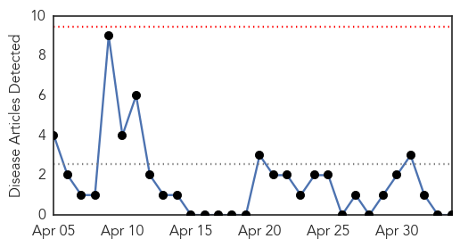
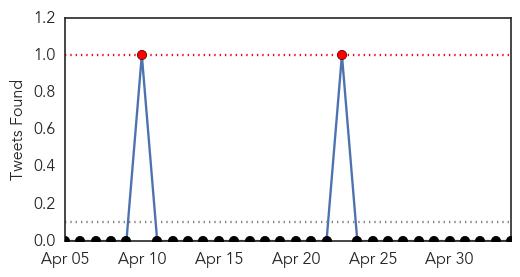
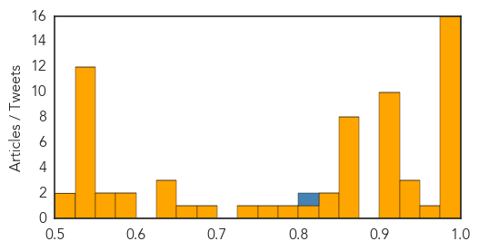

Cholera
30-Day Web Trend
0 alerts, 0 warnings

30-Day Twitter Trend
1 alerts, 0 warnings

Article Locations

Article Confidences

Top Articles:
-
No articles found for May 04, 2014
Top Tweets:
-
No tweets found for May 04, 2014
Unknown
30-Day Web Trend
1 alerts, 1 warnings

30-Day Twitter Trend
2 alerts, 1 warnings

Article Locations

Article Confidences
Top Articles:
- 1.000
- 1st U.S. MERS Patient Improving, Officials Say
- 1.000
- 1st U.S. MERS Patient Improving, Officials Say
- 0.999
- No new Middle East virus cases reported; governor to join media briefing
- 0.999
- No new Middle East virus cases reported; governor to join media briefing
- 0.999
- MERS death toll in Saudi 111
- 0.999
- Patient with MERS virus improving in Indiana
- 0.999
- Patient with MERS virus improving in Indiana
- 0.999
- Patient with MERS virus improving in Indiana
- 0.996
- Indiana Officials: Man Treated for MERS ‘Improving’
- 0.995
- MERS kills two more people in Saudi Arabia
- 0.994
- Saudi agents refuse to issue some Haj, Umrah visas over MERS fears
- 0.992
- MERS Patient Is Improving, No New Cases Identified
- 0.990
- Indiana MERS patient ‘improving’, no new cases reported
- 0.988
- Dallasblog.com, the Dallas, Texas news blog and Dallas, Texas information source for the DFW Metroplex.
- 0.979
- MERS Outbreak: Is It Coming to the U.S.? Should You Worry?
- 0.976
- First American MERS Virus Victim Getting Better In Munster
- 0.950
- MERS Patient Improving
- 0.938
- Diarrhoea claims 2 lives, over 12 persons affected in Odisha
- 0.936
- Bioterror Threat? New Smallpox-Related Virus Raises Alarms
- 0.927
- Rare and deadly Middle Eastern disease appears in an Indiana man
- 0.925
- Strange disease hits Kasese
- 0.917
- Chicago Tribune
- 0.917
- Chicago Tribune
- 0.917
- Chicago Tribune
- 0.917
- Chicago Tribune
- 0.917
- Chicago Tribune
- 0.917
- Chicago Tribune
- 0.916
- US hospital caring for MERS patient still bustling
- 0.915
- Health officials: No other MERS cases reported - Crescent-News
- 0.910
- The world windows to Thailand
- 0.866
- Three people killed in blasts targeting buses in Kenyan capital
- 0.866
- U.N. Secretary General Ban Ki-moon and United Arab Emirates Minister of State Al Jaber attend a conference on climate change in Abu Dhabi
- 0.866
- Odessa police free pro-Russian activists held after fighting
- 0.866
- Pro-Russian activists attack police station in Ukraine's Odessa
- 0.866
- U.N. Secretary General Ban Ki-moon speaks during a conference on climate change in Abu Dhab
- 0.866
- Yemen says 37 militants killed in southern army offensive
- 0.866
- Pro-Russia protesters storm the governor's business premises in Donetsk, eastern Ukraine
- 0.866
- An endangered silverback mountain gorilla from the Nyakamwe-Bihango family looks for food within the forest in Virunga national park near Goma
- 0.838
- Ministry of health warns of bogus doctors providing medical servicesHealthcare
- 0.835
- Scientists urge delay in destroying last smallpox
- 0.802
- Officials debate when to destroy last of smallpox - Columbia Daily Tribune
- 0.777
- DNA vaccine to fight kala-azar developed
- 0.750
- UAE issues warning as bogus doctors target vulnerable
- 0.735
- Health: Nursing Week – Honoring pioneers of the field
- 0.683
- Raw sewage contaminating Zim's drinking water sources
- 0.669
- Pilgrims over 60, kids face visa restrictionsHealthcare
- 0.643
- Chadrad.com
- 0.630
- Concern over killer pig virus spreading - Sarasota News
- 0.630
- Concern over killer pig virus spreading - Sarasota News
- 0.594
- Kenya : Report: Inspected meat may still be deadly
Showing top 50 articles...
Top Tweets:
- 0.822
- Health Authority of Abu Dhabi: 27 of the previous MERS cases have self-cleared the virus w/out treatment! Different MERS strain??
- 0.703
- Kurusu jegua se realiza en el Cabildo: En la sala de arte popular del Centro Cultural de la República El Cabil... http://t.co/5ezj6NMsXn
- 0.555
- Obama se ríe de sí mismo y sus adversarios en la cena de corresponsales: El presidente de EE.UU., Barack Obama... http://t.co/ulCJ2QseG3